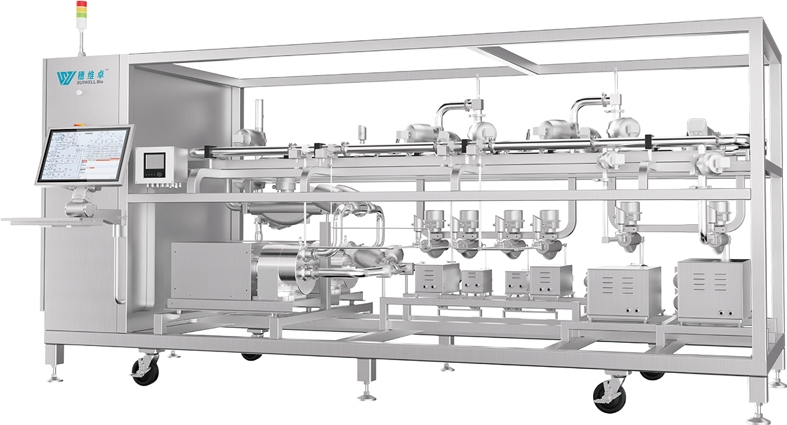

穗维卓生物宣传册全新发布：聚焦iSynFlo™ 在线配液系统
全新宣传册系统呈现产品定义、核心功能与端到端交付能力。
阅读全文 →为制药与医美领域提供专业在线配液系统解决方案
高度自动化，在封闭管路中实时动态混合稀释，直接产出符合工艺要求的药液

深耕制药与医美两大高增长领域
专注在线配液 · 赋能药企高效合规生产
上海穗维卓生物科技有限公司（简称“穗维卓生物”）是一家专注制药领域的高科技制造企业。公司以技术创新为核心驱动，深耕在线配液系统研发、设计与制造，为客户商业化生产提供定制化方案与全流程支持。
公司在线配液系统融合自动化控制、流体工程及洁净工艺技术，可实现缓冲液自动切换与全程闭环控制，支持集成或独立运行，高效省空间、稳定可靠。产品完全符合GMP及FDA合规要求，显著提升生产效率、降低交叉污染风险，保障药品质量稳定。
公司秉持“专业、创新、品质、服务”理念，立足中国智造，面向全球市场，以专业工艺，持续为客户创造价值，赋能制药产业高质量发展。
告诉我们您的应用场景，资深工艺工程师将为您提供定制化方案。